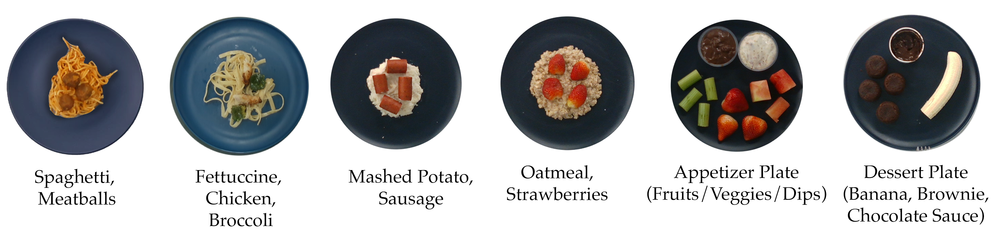

Robot-assisted feeding holds immense promise for improving the quality of life for individuals with mobility limitations who are unable to feed themselves independently. However, there exists a large gap between the kinds of homogeneous, curated plates existing assistive feeding systems can handle, and truly in-the-wild meals. Feeding realistic plates is immensely challenging due to the sheer range of food items that a robot may encounter, each requiring specialized manipulation strategies which must be sequenced over a long-horizon to feed an entire meal. An assistive feeding system should not only be able to sequence different strategies efficiently in order to feed an entire meal, but also in a way that is mindful of user preferences given the personalized nature of the task. We address this with FLAIR, a system for long-horizon feeding which leverages the commonsense reasoning capabilities of foundation models, along with a library of parameterized skills, to plan and execute user-preferred and efficient bite sequences. In real-world evaluations across 6 highly realistic plates, we find that FLAIR can effectively tap into a library of dexterous skills for efficient plate clearance, while adhering to the diverse preferences of over 42 as evaluated in a user study. We finally demonstrate the real-world efficacy of our approach by deploying our system with an in-mouth bite transfer framework for successfully feeding a care recipient with mobility limitations.
Using a customized motorized fork with two degrees of freedom, we instantiate a library of vision-parameterized food manipulation skills. These include acquisition skills which attempt to pick up food, and pre-acquisition skills which attempt to rearrange or portion food into bite-sized items for downstream acquisition. Each skill is parameterized by the visual state estimate of a food item, specifically a segmented observation obtained from GroundedSAM.
Given a plate observation and user preference in natural language, FLAIR first leverages VLMs (GPT-4V and GroundedSAM) to detect and recognize food items. Next, the segmented food observations along with their corresponding language labels serve as input to a Task Planner which outputs a sequence of skills to pick up each item.
Finally, an LLM (GPT-4) takes as input the summarized task plan and given user preference, and plans a sequence of bites (food items) to pick up using commonsense and chain-of-thought reasoning. FLAIR executes the necessary skills to pick up each next bite in a sequential fashion. Between bites, FLAIR can be combined with a framework for bite transfer to feed a user each acquired bite.
We evaluate FLAIR against an Efficiency-Only and a Preference-Only approach across 6 plates. Specifically, we compare how well each method adheres to preferences, and how humanlike each method is, as measured by Likert ratings in a user study across 42 individuals. We also quantify the rate of efficient plate clearance across all approaches in the setting where a user has no preference.

For users with strong preferences, FLAIR is perceived to adhere to preferences and behave more human-like than Efficiency-Only across many plate and preference combinations.
In the absence of strong preferences, FLAIR achieves faster plate clearance than Preference-Only, while achieving greater bite variability than Efficiency-Only.

FLAIR readily integrates with, and is agnostic to, the choice of bite transfer framework. Here, we replicate FLAIR separately at two different institutions and demonstrate combining our system for acquisition with a framework for outside-mouth transfer.
Below, we show an in-mouth system from prior work using real-time facial tracking and a compliant controller to feed a care recipient with Multiple Sclerosis the last requested strawberry dipped in chocolate.
In 2 Likert questions regarding the system’s diversity of skills and ability to follow preference, this user strongly agreed that FLAIR’s diverse bite acquisition skills and adherence to meal preferences are crucial for daily acceptance.